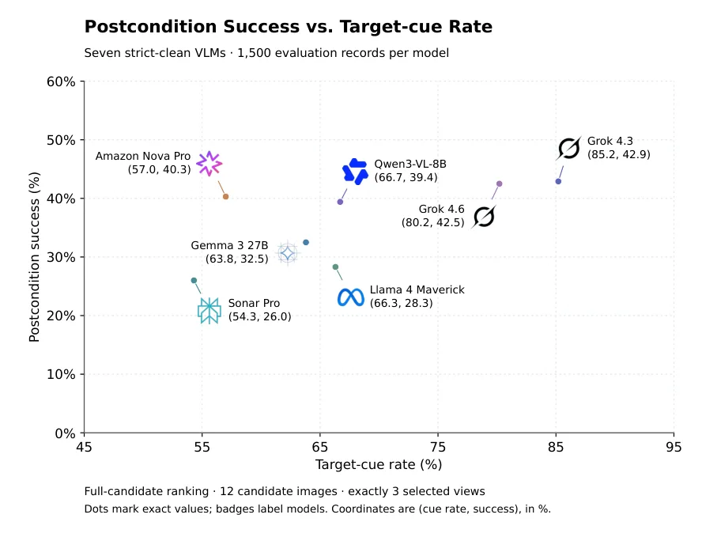
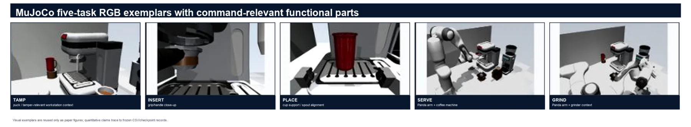
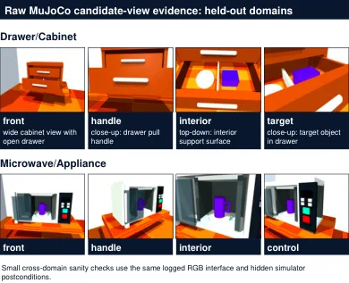
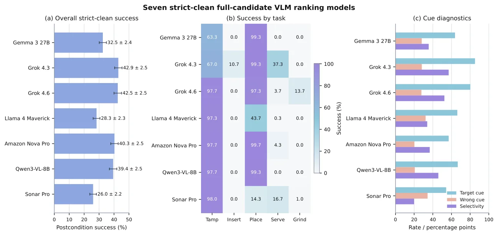
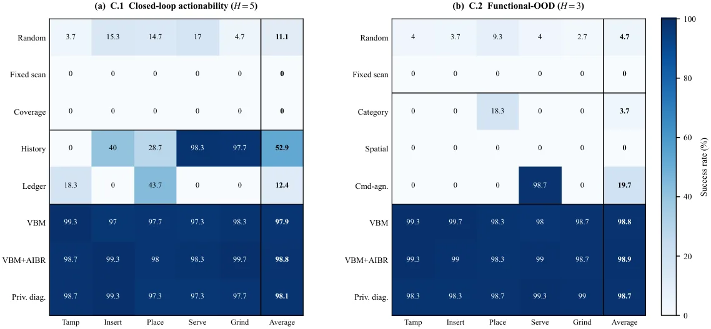

Seeing What Matters：面向操作的任务条件化可执行空间信念基准
Seeing What Matters: Benchmarking Task-Conditioned Actionable Spatial Belief for Manipulation
方法上有三件东西：空间—功能信念账本（谓词、估计值、置信度、视觉出处、陈旧标记、任务相关性）、规则化 View Belief Map（按缺失谓词的证据增益减视角代价排序）、以及可选的行动诱导信念修正（执行后比对预测与观测后置条件，定位陈旧条目并要求补看）。实验结论是：命令绑定与功能字段是决定性组件——去掉功能字段，功能 OOD 成功率掉到 0.0%；去掉命令绑定掉到 19.7%；预算收紧到 H=1 时闭环只有 19.0%。把元数据换成冻结 CLIP 特征的 VBM-Vision 仍有 98.5%/98.9%，但把 RGB 覆盖率行打乱就掉到 14.9%/11.4%，说明结果确实依赖图像内容而非元数据泄漏。
reference pipeline success
VLM success range
success at H=1
ablation without functional fields
作者、单位与技术谱系 · Research context
作者与单位
研究脉络
- Theory of Space（Zhang et al., ICLR 2026）方法基座关系：本篇把 Theory of Space 的“主动探索中构建与修正空间信念”从场景级问答推进到操作条件化：保留信念修正的动机，但把评分改成“指令所需证据是否被取到”。[论文引言与图 2]
- ESI-Bench（Hong et al., arXiv 2605.18746）同期对照关系：ESI-Bench 把空间智能评测扩展到感知—动作闭环，本篇则用冻结视角与固定技能把“证据获取”单独隔离，属于互补而非替代。[论文 2 节相关工作]
- 主动视觉与 next-best-view 传统（Bajcsy 1988；Connolly 1985 等）技术前作关系：证据增益排序继承了 next-best-view 的“按信息增益选观测”思路，但把增益定义从几何不确定性换成指令相关的功能谓词覆盖。[论文 2 节主动感知部分]
合作网络
- Columbia × Stanford 双单位署名Yina Jian → Columbia University / Stanford University关系：共同署名[arXiv HTML 机构行]
- 广东省智能科学与技术研究院（通讯单位）Mingkun Xu → Guangdong Institute of Intelligence Science and Technology关系：共同署名[arXiv HTML 机构行]
- 致谢中的仿真初始草稿贡献Guangyu Li（HKUST / MBZUAI） → Seeing What Matters 仿真环境关系：项目依赖[论文致谢]
作者与单位取自论文首页；ESI-Bench、Theory of Space 的关系来自正文引用语境，属有来源的解读。致谢中的贡献者仅记为项目依赖，不推断师生或隶属关系。
方法本质拆解 · What actually changed
不训练选择策略，只训练一个覆盖率头
参考管线本身是规则化的：证据增益由命令模板、缺失谓词集合与候选视角的公开元数据确定性算出，没有任何可学习参数。唯一被训练的是 VBM-Vision 里的逐谓词线性覆盖率头，它用冻结 CLIP-B/32 特征做输入、用训练场景组的可见性标签监督，并按场景组五折交叉验证。视觉语言模型全部零样本提示，不做微调。
约束是信息契约与隐藏后置条件
硬约束不在损失函数里，而在协议上：所有方法共享同一候选视角集、同一初始状态、同一脚本技能库与同一隐藏后置条件评测器，隐藏仿真状态、评测标签和未选视角渲染在行动前不可见。预算 H 限制可获取的观测数，补看也要计费；功能 OOD 协议固定物体身份、只改指令要求的功能条件，从而切断“按物体类别猜”的捷径。
推理是“打分—选视角—更新账本”的序贯循环
每次迭代先由命令模板确定目标谓词集合，再从账本里取缺失、低置信或陈旧的谓词，用公开元数据估计每个候选视角对这些谓词的证据增益，减去归一化视角代价后选最大者。观测到达后更新账本条目的估计值与置信度，进入下一轮；执行后可选地比对后置条件并触发局部补看。全程没有新后端、没有全局优化，也不调用大模型做决策。
把“看到”转成“取到该取的证据”
机制是把空间信念显式写成可检查的谓词集合，再用指令把这些谓词分成“当前必须满足”和“暂不相关”，于是视角选择变成对缺失证据的贪心覆盖。这样任务的成败不再取决于控制器或场景描述质量，而取决于证据链是否闭合；它没有做的是学习式视角打分、真实机器人执行与家庭规模验证。
输入 = 指令 + 12 个冻结候选视角 + 账本状态；改变的位置 = 把空间信念写成带置信度/出处/陈旧的谓词并绑定到指令；约束/动作 = 预算化证据增益排序 + 序贯账本更新 + 可选后置条件修正；直接效果 = 98.8%/98.9% 成功率，而同等信息下 VLM 仅 26–43%。

桥接价值Bridge
桥接价值
它补的是“空间表征 → 具身决策”之间的评测缺口：多数空间基准只看答案对不对或场景描述全不全，这里直接问“当前指令需要的那条观测链有没有被取到”。对我们做主动感知、下一代视角选择或多传感器按需观测，它提供了一个可复用的因果结构：冻结场景与技能、只改指令与观测预算、用隐藏后置条件判成败。另一个价值是它给出了诚实的负结果：七个严格筛选的视觉语言模型在同等信息契约下只有 26.0–42.9%，比诊断参考管线低 55.9 个百分点。
方法与模块Method
方法摘要
账本条目写成六元组（谓词、估计值、置信度、视觉出处、陈旧标记、任务相关性），谓词覆盖部件可见性、相对位姿、支撑、容纳、可供性、功能线索与预测后置条件。View Belief Map 对每个候选视角算“缺失/不确定/陈旧谓词的平均证据增益减去归一化视角代价”，按序贯方式一次取一个视角并更新账本。执行后由可选的行动诱导信念修正比对预测与观测后置条件，定位被违反的谓词类型、降低其置信度并要求局部补看，补看计入预算。所有隐藏仿真状态、评测标签与未选视角的渲染在行动前都不暴露给选择器。
可迁移模块
第一是可搬运的“证据账本”数据结构：把地图元素写成带置信度、出处与陈旧标记的谓词，比只存点云或栅格更适合表达“这条观测还能不能用”。第二是预算化视角排序：以缺失证据的期望增益除以观测代价作为打分，和我们做传感器调度、按需重定位时的收益—代价模型同构。第三是泄漏检查范式：先用元数据跑出上界，再把元数据替换成冻结 RGB 特征、最后打乱特征行，三步确认增益来自图像内容，这套流程可以直接用于审我们自己的学习式前端是否在偷看标签。

证据Evidence
关键证据与数字
主结果：VBM+AIBR 在闭环协议 H=5 下平均成功率 98.8%，功能 OOD H=3 下 98.9%；对照 History active 52.9%、Target ledger 12.4%、Random 11.1%、Fixed scan 与 Pose coverage 均为 0.0%，特权诊断锚点为 98.1%/98.7%。预算压力：H=1 时闭环降到 19.0%、功能 OOD 降到 58.6%。消融：去掉功能字段功能 OOD 为 0.0%，去掉命令绑定为 19.7%。模型侧：七个通过严格清洗的视觉语言模型成功率 26.0–42.9%（Grok 4.3 最高 42.9%，Sonar Pro 最低 26.0%），与参考管线差 55.9 个百分点。RGB 替换实验：VBM-Vision 98.5%/98.9%，打乱覆盖率行后 14.9%/11.4%。
边界与下一步Limits & Next Step
边界与风险
主结论来自单一仿真咖啡工作站（500 个用例），抽屉/柜子与微波炉各 180 例只是小规模健全性检查，作者自己写明不构成家庭规模迁移证据。参考管线使用语义视角名与标称功能部件覆盖率，VBM-Vision 虽去掉推理期元数据，训练覆盖率头仍需要谓词可见性标签，完全无监督版本未做。近饱和也是风险：98.8% 意味着主设置已难区分方法优劣，真正有区分度的是 H=1 与打乱 RGB 这类压力条件。此外 VLM 压力测试是一次性预览 12 个候选再选 3 个，与序贯获取不是同一信息契约，二者差距不能直接读成架构优劣。
下一步实验
第一步可在我们现有的多相机/多传感器数据上搭一个最小版账本：把关键地标写成“可见性 + 相对位姿 + 支撑关系”三类谓词，记录出处与陈旧标记，然后比较“固定顺序观测”“按信息增益选传感器”“按指令绑定选传感器”三种策略在同一预算下的任务成功率。第二步复现它的泄漏检查：把视角元数据替换成冻结视觉特征，再打乱特征与视角的对应关系，确认增益来自图像而不是调度表。第三步把 H=1 式紧预算作为常规压力档，并记录失败是“没看到”还是“看到了但没绑定到指令”，这两类失败对应的改进方向完全不同。







